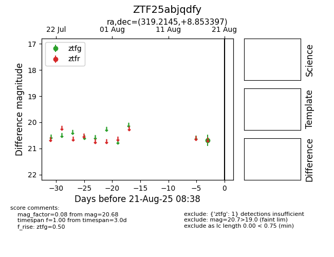

Target ZTF25abjqdfy at 2025-08-21 08:38, see:
FINK: fink-portal.org/ZTF25abjqdfy
Lasair: lasair-ztf.lsst.ac.uk/objects/ZTF25abjqdfy
ALeRCE: alerce.online/object/ZTF25abjqdfy
alt names
ZTF25abjqdfy (ztf,alerce)
coordinates:
equatorial (ra, dec) = (319.2145,+8.85340)
galactic (l, b) = (59.8515,-26.81484)
photometry
last ztfg=20.68
1 ztfg detections
